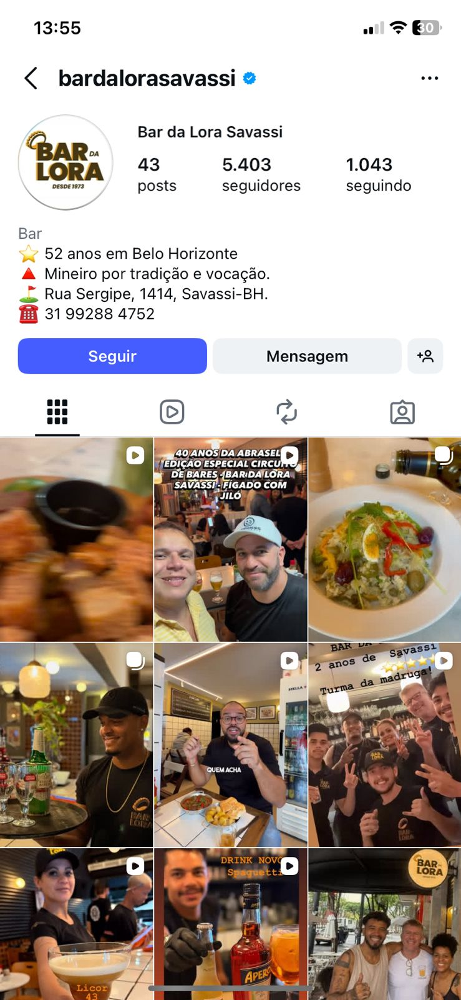

O Bar da Lora saiu do Mercado Central e chegou na Savassi. O mesmo tempero premiado do Comida di Buteco — agora com mesa garantida e ambiente pra ficar.
O Bar da Lora nasceu no Mercado Central de BH há 52 anos. Trouxemos as receitas originais, os prêmios do Comida di Buteco e aquele tempero que você nunca esquece — em um ambiente climatizado, confortável e sem as filas do Mercado Central.
O clássico Fígado com Jiló que conquistou o Mercado Central, preparado com a mesma receita original e aquele tempero inconfundível. Uma verdadeira instituição mineira, agora servida em um ambiente sofisticado na Savassi. Perfeito para acompanhar o seu chopp gelado.
Esqueça tudo o que você sabe sobre torresmo de boteco. Selecionamos os melhores cortes e aplicamos técnicas artesanais de gerações para garantir uma carne suculenta por dentro e uma pururuca impecável por fora. O acompanhamento perfeito para qualquer brinde.
Aquele almoço completo, com tempero de casa e ingredientes selecionados a dedo. Uma combinação perfeita de texturas e sabores tradicionais, servida no capricho. O seu novo destino favorito para recarregar as energias no meio do dia.
Carnes selecionadas, grelhadas na chapa bem quente para selar o sabor, acompanhadas daquela mandioca que derrete na boca. Uma porção generosa, feita para compartilhar bons momentos e celebrar com quem você gosta.
Ludimila Voronkoff
Local Guide • 6 meses atrás"Atendimento nota 1000! O Gustavo que nos atendeu, deu as melhores dicas de petiscos, bolinho de queijo, carne de panela com mandioca e pão, sanduíche de pernil de porco e torresmo de barriga de porco com melaço de cana! Tudo excelente! Tempero fora de série! Cerveja geladíssima! Vale muito !"
R. Sergipe, 1414 - Savassi, Belo Horizonte - MG
Pratos novos, promoções de happy hour e o dia a dia do bar mais tradicional da Savassi. Vem acompanhar.

Estamos na R. Sergipe, 1414 - Savassi, Belo Horizonte - MG. Uma localização privilegiada e de fácil acesso para você aproveitar o melhor de BH.
Funcionamos de Segunda a Sábado, das 11h às 00h. Aos Domingos, abrimos das 11h às 18h. Perfeito para almoços tardios ou Happy Hour.
Recomendamos reserva para grupos acima de 6 pessoas ou visitas em fins de semana — as mesas costumam esgotar.
Reservar agora →Sim! Nosso ambiente na Savassi é totalmente climatizado, acessível e preparado para receber toda a família, preservando o conforto que você merece.
Com certeza! Seguimos a mesma receita original e premiada de 52 anos de tradição. O mesmo tempero que você conhece e ama, agora em uma experiência mais sofisticada.